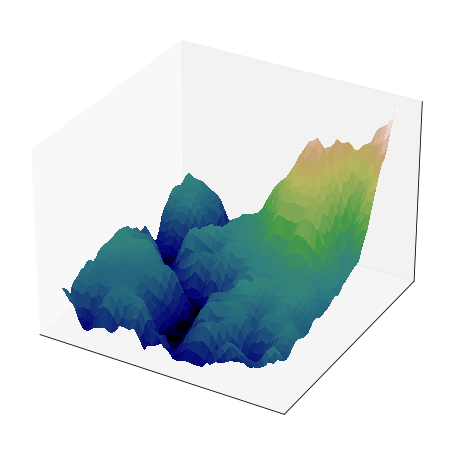
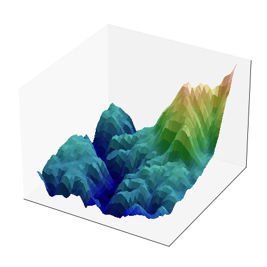

Hillshading in matplotlib
Matplotlib provides a light source and shading library. This can be used to create some extremely great and pleasing visualizations - for examples see this Twitter post by James Beattie or this visualization by Noam Vogt-Vincent. This has increased my curiousity about what and how to use this shading module of matplotlib. This particular post will be based on the simple example shown on the matplotlib page (here).
Let us first import the required libraries.
import numpy as np import matplotlib.pyplot as plt from matplotlib import cm, cbook from matplotlib.colors import LightSource
Now that we have the libraries, we need to set up the data that we will use for plotting. We will use the sample data provided in matplotlib.
dem = cbook.get_sample_data("jacksboro_fault_dem.npz", np_load=True)
z = dem['elevation']
nrows, ncols = z.shape
x = np.linspace(dem["xmin"], dem["xmax"], ncols)
y = np.linspace(dem["ymin"], dem["ymax"], nrows)
x, y = np.meshgrid(x, y)
region = np.s_[5:50, 5:50]
x, y, z = x[region], y[region], z[region]
We will first use this data to plot a simple surface plot without any light sources to see what it adds.
fig, ax = plt.subplots(subplot_kw=dict(projection='3d'), figsize=(8,8))
surf = ax.plot_surface(x, y, z, rstride=1, cstride=1, linewidth=0, antialiased=False, shade=False, cmap=plt.get_cmap('gist_earth'))
ax.set_xticks([])
ax.set_yticks([])
ax.set_zticks([])
fig.savefig("./images/plain_surface.png")

Now, if we add a lightsource to this, we should be able to see the differences in the plot in a much better way.
fig_l, ax_l = plt.subplots(subplot_kw=dict(projection='3d'), figsize=(8,8))
ls = LightSource(0, 45)
rgb = ls.shade(z, cmap=cm.gist_earth, vert_exag=0.1, blend_mode='soft')
ax_l.plot_surface(x, y, z, rstride=1, cstride=1, facecolors=rgb, linewidth=0, antialiased=False, shade=False)
ax_l.set_xticks([])
ax_l.set_yticks([])
ax_l.set_zticks([])
fig_l.savefig('./images/light_surface.png')

We will try and animate this lightsource to make its presence more visible.
from matplotlib.animation import FuncAnimation
def update(frame):
ax_l.collections = []
ls = LightSource(frame%360, 45)
rgb = ls.shade(z, cmap=cm.gist_earth, vert_exag=0.1, blend_mode='soft')
ax_l.plot_surface(x, y, z, rstride=1, cstride=1, facecolors=rgb, linewidth=0, antialiased=False, shade=False)
anim = FuncAnimation(fig_l, update, frames=360)
anim.save("./images/lightsource.gif", writer="imagemagick", fps=60)
# anim.save("./images/lightsource.mp4", writer="ffmpeg", fps=60)